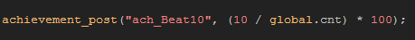
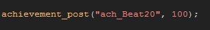

Tutorial
Page 6 of 8
Sending Achievements
The next step is to post an achievement to the Game Center using the function achievement_post.
Now, you should decide beforehand what type of achievements you are going to have in your game, bearing in mind the limitations that Game Center imposes (100point maximum
value per achievement, 1000point maximum total value for all achievements), but no matter what type you have, they will all follow the same percentage format for posting.
What this means is that you can actually have Game center show the current progress towards getting any specific achievement by turning the value into a percentage. For example, if
we have an achievement in our game that requires the player to get ten items, we can send an achievement update every time they find one so that in the Game Center they can see how
many more items they have to get. The code for that would look something like this:

The first part of the code is the name of the achievement as defined by the Achievement ID (explained on page 4 of this tutorial) and is always a string. The second part is the
percentage of the achievement that we wish to update the Game Center with. You can also set the percentage to 100 percent directly and in this way have achievements that are "unlocked"
at any point in the game and which are controlled by you. Here is an example of the code:

You should note that when making achievements, they should not be too easy (of the type "You started the first level! Well Done!") as that can insult the player, nor should they be incredibly
difficult to get either 8as that will frustrate the player), but rather there should be a mix of different types with a curve from simple to hard that is attainable and feels natural. You should also be
careful about how you use "hidden" achievements as these can often frustrate and annoy too.
One final thing that should be noted, is that you should also keep track of the achievements that a player has gained on a local level too, storing them in an *.ini file for example. In this way
the player has an in-game record of their progress.
Click on the Next button to go to the next page of the tutorial.